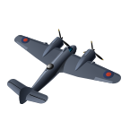
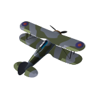
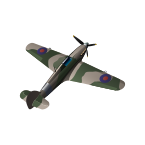
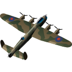
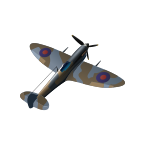
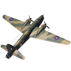

|  | Beaufighter Mk.X Компания "Bristol" решила использовать существующие разработки и основные элементы конструкции бомбардировщика-торпедоносца Beaufort для создания нового дальнего истребителя - так на свет появился проект "Beaufighter", уникальный в своем роде хотя бы тем, что разрабатывался не по заданию Министерства авиации Великобритании... |
Страна :Великобритания Тип : Штурмовик, Торпедоносец Год : 1942 |
|  | Gladiator Mk.II Истребитель-биплан Глостер Гладиатор (Gloster Gladiator) был лучшим и последним бипланом, стоявшим на вооружении британских ВВС.
|
Страна :Великобритания Тип :Истребитель Год : 1937 |
|  | Hurricane Mk.IIB Хоукер Харрикейн (англ. Hawker Hurricane) был самым массовым британским истребителем Второй мировой войны. Проектировавшийся еще с 1934 года, самолет поступил на вооружение за год до начала войны. |
Страна :Великобритания Тип :Истребитель Год : 1940 |
|  | Lancaster Mk.III Тяжелый четырехмоторный бомбардировщик, представляющий собой цельнометаллический моноплан с двухкилевым оперением, был создан на базе среднего двухмоторного бомбардировщика Avro Model 679 Manchester. Первый прототип Lancaster поднялся в воздух 09.01.1941, а первый серийный самолёт вышел из заводских цехов 31.10.1941. |
Страна :Великобритания Тип : Тяжелый бомбардировщик Год : 1941 |
|  | Spitfire Mk.I Одноместный истребитель, одномоторный цельнометаллический моноплан. Опытный Spitfire (Prototype K5054) совершил свой первый полет 06.03.1936, серийное производство истребителей этого типа началось в мае 1938 г, а с августа того же года они появились в строевых частях RAF. |
Страна :Великобритания Тип :Истребитель Год : 1939 |
|  | Wellington Mk.X Wellington Mk.X стал последней серийной модификацией бомбардировщика. Он строился на базе планера Mk.III и имел аналогичное вооружение и оборудование. |
Страна :Великобритания Тип :Бомбардировщик Год : 1942 |